Full Health Check
Guided read-only audit with progress, warnings and evidence.
See actual screen →Diagnose · Monitor · Automate — Anywhere.
A portable, USB-live Linux environment for practical diagnostics, troubleshooting and learning. Boot it, explore your system, and collect evidence—without installing a replacement operating system.
Ubuntu 24.04 LTS base · x86-64 · CLI-first with a lightweight desktop · Safety-first diagnostics
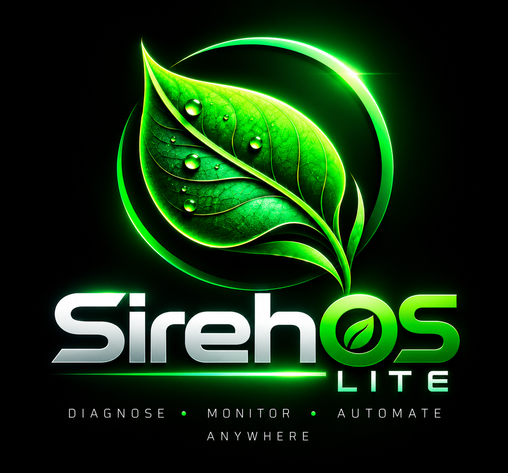
SirehOS takes its name from sireh, the Malay word for betel leaf, with a personal connection to Kebun Sireh in Penang, Malaysia. It began as an independent passion project: a wish to make infrastructure troubleshooting more approachable, portable and useful.
Our first release family follows the language of growth. Benih means seed: a small beginning with room to grow.
Mission: Build practical, transparent and safety-first tools that help people understand their systems, diagnose problems and learn by doing.
Vision: Grow an international open-source community where engineers, students, educators and curious newcomers can contribute tools, exchange knowledge and build useful technology together.
“A seed does not need to be big to grow into something meaningful.”
SirehOS Lite is not trying to be another everyday Windows replacement. Think of it as an infrastructure Swiss Army knife you can carry on a USB drive. The goal is original, integrated troubleshooting workflows—not merely a collection of unrelated utilities.
Sireh Doctor is a graphical diagnostics workspace for beginners and experienced engineers. These are implemented beta tabs, not a claim of complete diagnosis or recovery. Results can be inconclusive, and some capabilities are intentionally limited for safety.
Guided read-only audit with progress, warnings and evidence.
See actual screen →Explore CPU, memory, thermals and battery information.
See actual screen →Inspect detected drives and available disk-health evidence.
See actual screen →Review boot modes, partitions and accessible OS evidence.
See actual screen →Investigate crash logs, application artifacts and Windows evidence when accessible.
See actual screen →Inspect local access, network exposure and configuration evidence.
See actual screen →Discover devices safely; recovery and copying are not enabled in this beta.
See actual screen →Turn existing findings into prioritized, non-destructive next steps.
See actual screen →Browse 214 Linux command examples without executing them.
See actual screen →Consolidate cached findings and export or print a diagnostic report.
See actual screen →These are genuine captures from Sireh Doctor. No fabricated success scores or simulated diagnostics. Some screenshots show tests run on a Linux Mint development machine, while the live environment is being tested separately in QEMU.
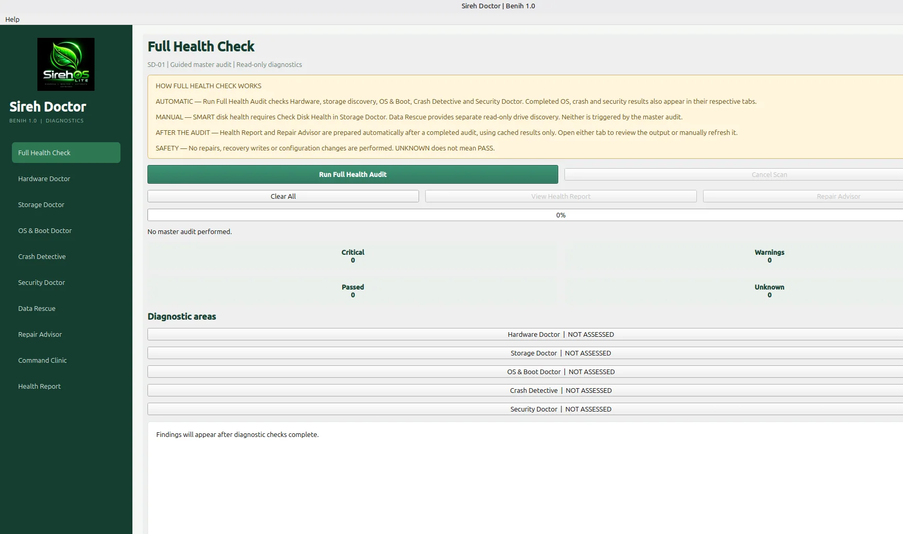
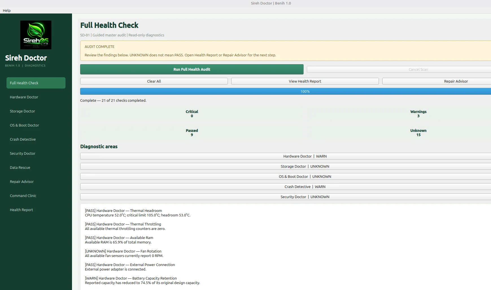
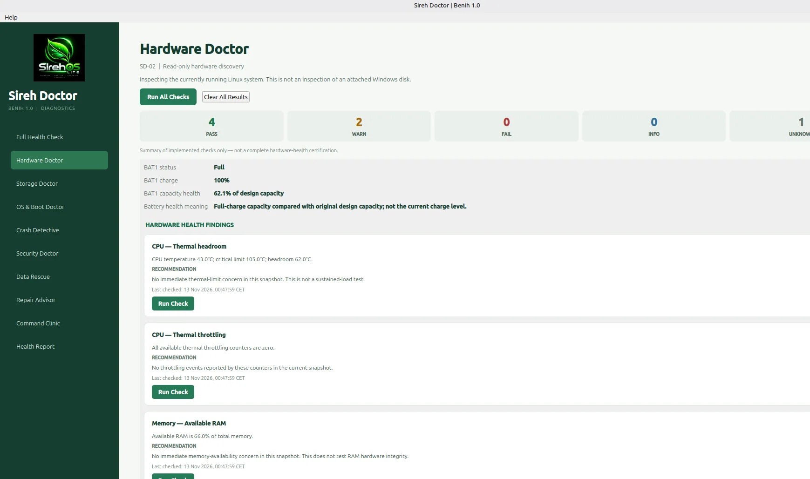
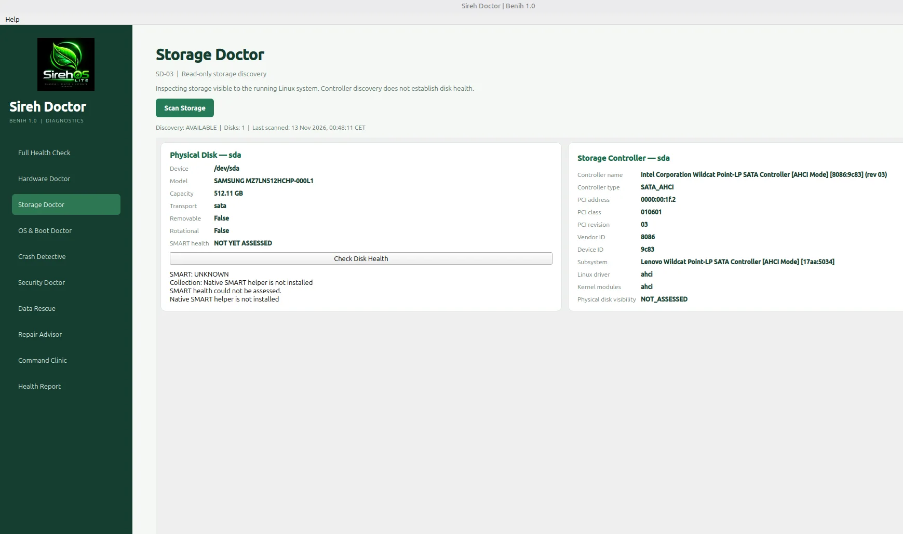
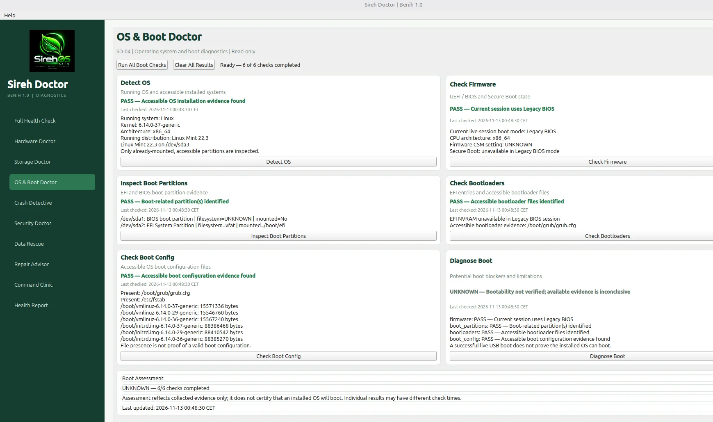
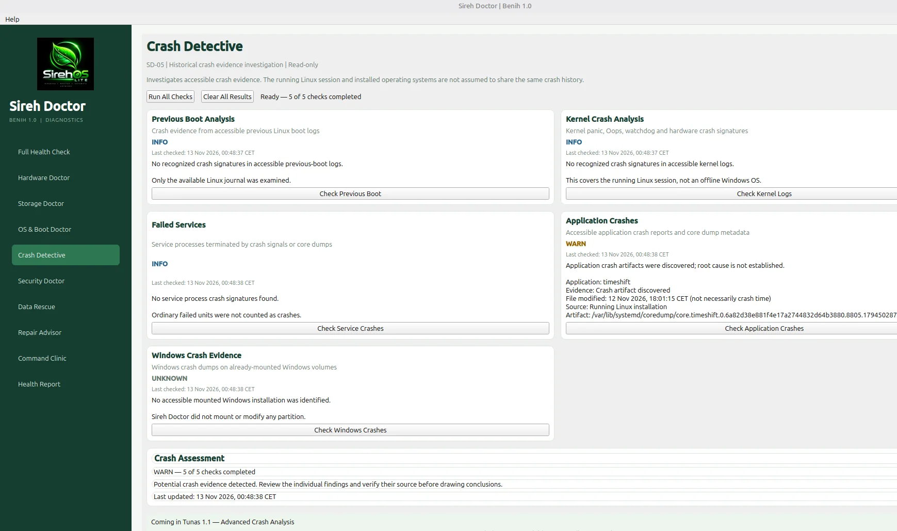
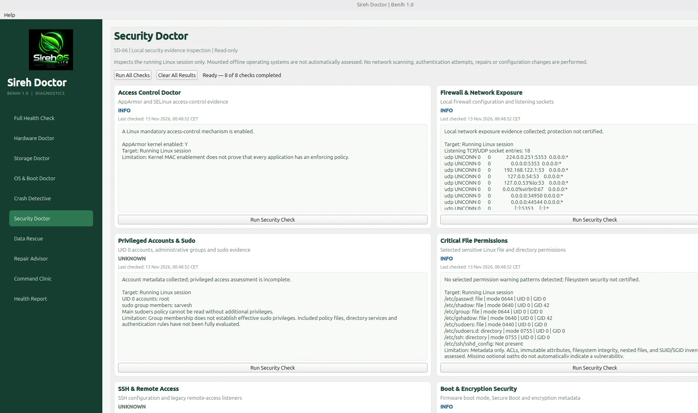
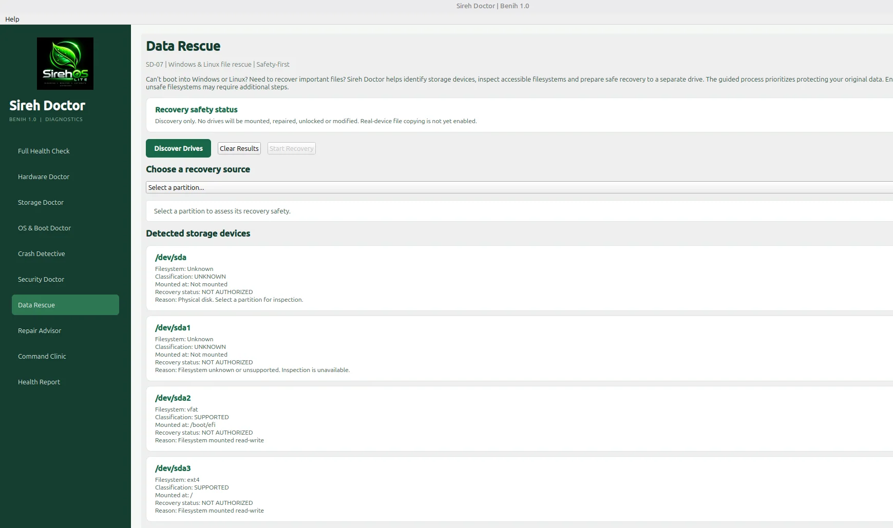
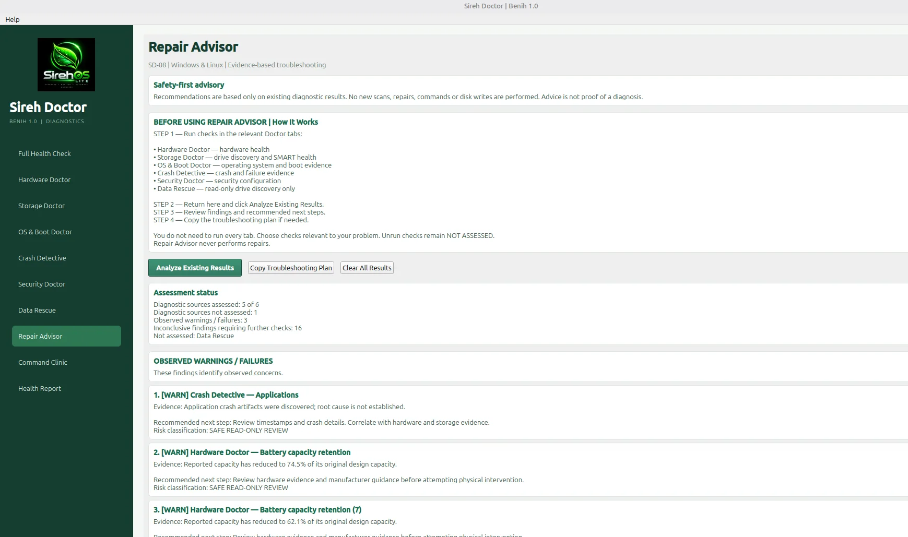
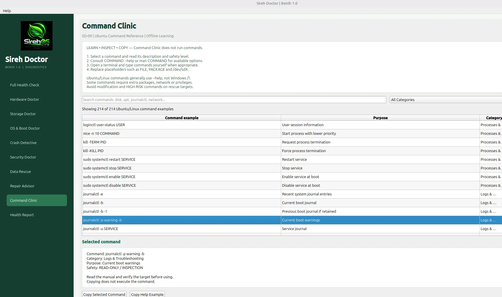
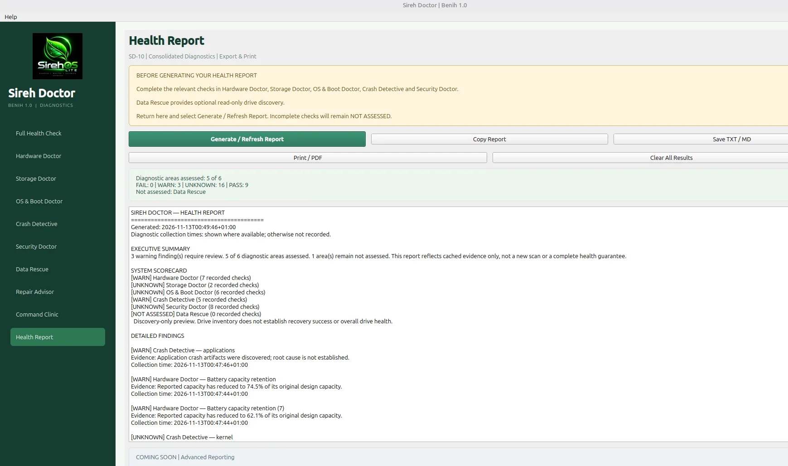
Your first SirehOS Lite adventure starts here. Download the experimental USB-live ISO directly from the official GitHub release—no hunting through repositories or collapsed menus.
Bootable ISO · Approximately 1.3 GB · 64-bit PCs
Official GitHub-hosted release asset. Your browser should begin downloading the .iso file when you select the green button.
Open the Beta 4 release page, scroll to the bottom, expand Assets if it is collapsed, and select SirehOS-Lite-1.0-Benih-Beta4.iso. Do not choose “Source code (zip)”—that is not the bootable image.
Illustrated guide based on the release page; GitHub's appearance may change.
Compare the SHA-256 checksum of your downloaded ISO with the checksum on the official Beta 4 release. The values must match exactly.
Linuxsha256sum SirehOS-Lite-1.0-Benih-Beta4.isoWindows PowerShell
Get-FileHash .\SirehOS-Lite-1.0-Benih-Beta4.iso -Algorithm SHA256
Run the command from the folder containing the ISO, or provide its full path. A checksum verifies integrity, not overall software safety.
You cannot make a bootable USB by copying the ISO file onto a drive as a normal document. Writing an ISO image replaces the USB's existing contents. Back up your files first.
The same Linux imaging method works across these distributions. Identify the removable drive using:
lsblk -o NAME,SIZE,MODEL,TRAN,MOUNTPOINTS
Unmount any mounted partitions on the selected USB first. Then write the ISO to the whole USB device, not a numbered partition:
sudo dd if="/path/to/SirehOS.iso" of=/dev/sdX bs=4M status=progress conv=fsync sync
/dev/sdX is a placeholder, not a command to run unchanged. Replace it only after positively identifying your USB drive. Choosing your internal disk will destroy its data. NVMe/USB naming can differ. Do not use /dev/sdX1 (a partition).After writing completes, safely eject the drive and use your computer's firmware boot menu to start SirehOS.
Boot behavior varies by firmware, Secure Boot configuration and hardware. Beta testers should try a spare machine or virtual machine first. SirehOS does not need to be installed to the internal disk.
The broader Sireh Core vision includes OneScan, TimeShift, EvidencePack and PathFinder. Roadmap items are goals, not promises of features already available in Beta 4.
Boot it. Explore a diagnostic tab. Tell us what worked, what confused you, and what hardware you tested. Beginners are welcome, and respectful bug reports are as valuable as code contributions. We want to build a community that learns together.
Join GitHub Discussions for questions, ideas, feedback and community conversations (once enabled in the repository). Use GitHub Issues for reproducible bugs and technical problems. Please remove passwords, tokens, personal identifiers and sensitive system information from shared reports.
“Built for infrastructure. Driven by community.”